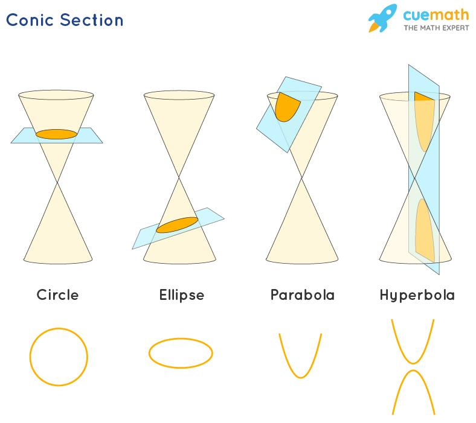
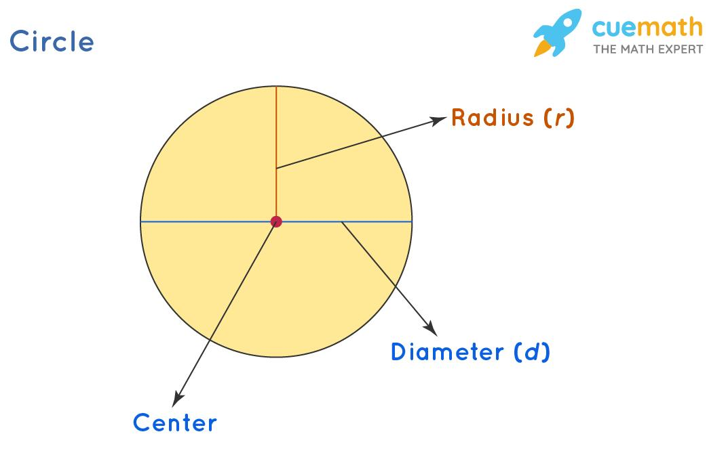
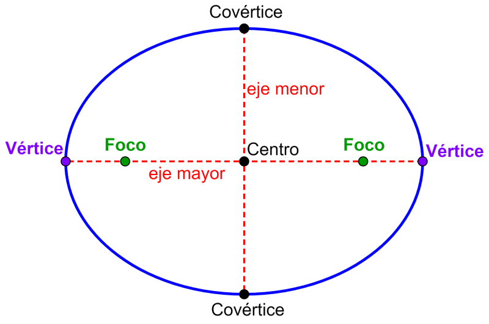

Las cónicas son figuras geométricas que se obtienen cuando un plano corta un cono. Dependiendo de la inclinación y la posición del plano, se pueden formar diferentes curvas. En este caso, vamos a estudiar dos tipos de cónicas: la circunferencia y la elipse. Ambas son figuras cerradas y tienen características y ecuaciones diferentes.
Las cónicas aparecen en muchas situaciones de la vida cotidiana. Por ejemplo, las circunferencias se pueden encontrar en ruedas, monedas y relojes, mientras que las elipses aparecen en las órbitas de los planetas alrededor del Sol. En resumen, estas figuras permiten representar y estudiar diferentes formas y situaciones mediante la geometría.
¿Cómo se forman las cónicas?
Las cónicas se forman al realizar cortes en un cono mediante un plano. Según cómo se encuentre ubicado ese plano, se obtiene una figura diferente. Cuando el plano corta el cono de manera perpendicular a su eje, se forma una circunferencia. En cambio, cuando el plano corta el cono de manera inclinada, sin llegar a ser paralelo a uno de sus lados, se obtiene una elipse.

1. Circunferencia
La circunferencia es una curva cerrada cuyos puntos se encuentran a la misma distancia de un punto fijo llamado centro. Esa distancia recibe el nombre de radio. Es una de las figuras geométricas más conocidas y se puede encontrar en objetos como ruedas, monedas y relojes.
Su fórmula principal, cuando el centro es cero, es:
x² + y² = r²
Si el centro NO es cero, la ecuación es:
(x - c1)² + (y - c2)² = r²
c1 y c2 son las coordenadas del centro de la circunferencia.
Elementos principales
Los elementos principales de una circunferencia son el centro, que es el punto fijo ubicado en el medio; el radio, que es la distancia desde el centro hasta cualquier punto de la circunferencia; y el diámetro, que es el segmento que atraviesa el centro y une dos puntos de la circunferencia. El diámetro mide el doble que el radio.

2. Elipse
La elipse es una curva cerrada y ovalada que se parece a una circunferencia estirada. Tiene dos puntos fijos llamados focos, y la suma de las distancias desde cualquier punto de la elipse hasta esos dos focos siempre es la misma. Se puede observar, por ejemplo, en las órbitas de los planetas alrededor del Sol.
Su ecuación principal, cuando está centrada en el origen, es:
x²/a² + y²/b² = 1
Elementos principales
Los elementos principales de una elipse son el centro, que es el punto medio de la figura; los focos, que son dos puntos ubicados en su interior; el eje mayor, que es su diámetro más largo; y el eje menor, que es su diámetro más corto. También tiene vértices, que son los extremos de sus ejes.

Ecuación General
Las cónicas tienen una fórmula general para definir los puntos (x,y) que la forman. La
ecuación general de una cónica es:
Ax² + Bxy + Cy² + Dx + Ey + F = 0
donde A, B, C, D, E y F son coeficientes. El valor de B² - 4AC determina el tipo de
cónica:
Si B² - 4AC < 0, la cónica es un círculo o una elipse.